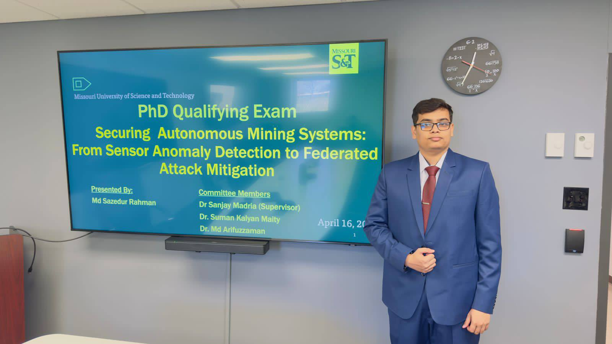

Secure federated learning
Trust-weighted aggregation and detection methods for label-flip, sign-flip, additive-noise, intermittent and unreliable-client behaviors. Clients whose updates look wrong get less say in the shared model.
Federated learning breaks when some clients lie. I build defenses that keep the model honest.
Security and privacy for cyber-physical systems, with a focus on poisoning attacks, robust aggregation and real data from underground mines.

My research focuses on securing federated learning against malicious and unreliable clients in spatially distributed underground mines.
I develop trust-aware aggregation, poisoning-attack detection and robust learning methods that cope with non-IID data, intermittent connectivity, low illumination, dust, occlusion and other conditions found in real mines. I also work on computer vision, anomaly detection and trustworthy AI for cyber-physical systems.
My work connects algorithmic robustness with the operational realities of autonomous underground mining and connected cyber-physical systems.
Trust-weighted aggregation and detection methods for label-flip, sign-flip, additive-noise, intermittent and unreliable-client behaviors. Clients whose updates look wrong get less say in the shared model.
Safety-sign recognition, situational awareness and robust perception, using MineSigns and other real and synthetic mining datasets, so results reflect dust, low light and occlusion.
Anomaly detection, malicious-sensor identification, privacy and resilient collaboration across vehicles, robots and IoT devices.
Peer-reviewed work in federated learning security, intelligent mining and connected systems. See Google Scholar for the full record.
A federated learning defense that limits the influence of client updates associated with label flipping.
Video collected in an underground mine and annotated across 13 safety-sign classes for perception research.
PhD student in computer science, Missouri S&T. Graduate research assistant, W2C Lab.
Download CV (PDF)I welcome research conversations, collaborations and academic opportunities.
mrvfw@umsystem.edu W2C Lab, Missouri S&T, Rolla, Missouri, USA